|
|||||||||||||||||||||||||||
|
|||||||||||||||||||||||||||
| |
|
蓮華温泉ツアーー天狗の庭と金山沢を滑るー |
| 実 施 日 | ２００９年４月１１日〜１２日 | |||
| リーダー | Kゆかり |
|||
| 報 告 者 | 野口 いづみ | |||
| 参加者数 | ７名 （会員１名、非会員６名） | |||
| 今回、某スキークラブで講演したことをきっかけに、蓮華温泉ツアーに誘ってもらえることになった。蓮華温泉は行ったことがない。2日目は平岩ではなく、1200mを登り返して金山沢を滑る予定。金山沢も初めてだ♪♪♪ |
| １日目 ４月１１日（土） |
| ゴンドラとロープウエイを乗り継いで、9：40、自然公園（標高1829m）をシールをつけて出発する。 |
| 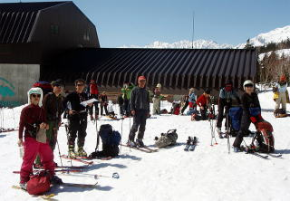 | A | 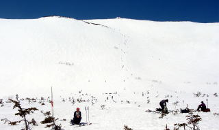 |
| すばらしい天気だ。日焼けが怖い。 | 11:00、天狗原着。 |
| 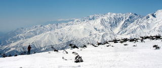 | A | 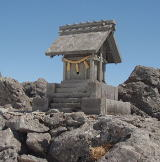 | 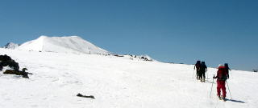 |
| 北アルプスがよく見える。正面に八方尾根。 | 前途の無事を祈る。 | 白馬乗鞍から大池へ向かう |
| 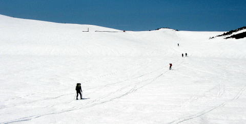 |
| 白馬乗鞍から白馬大池へ。小屋の屋根が線状に見える。 |
| 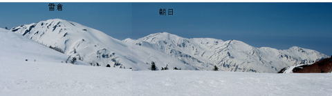 |
| 大池の向こう側には雪倉朝日のパノラマが眼前に広がっていた。 |
| 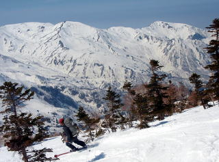 | A | 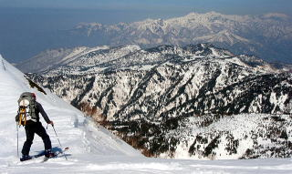 |
| 蓮華温泉側にドロップイン！ | 頚城山群が眼前に見える場所があった。 |
| 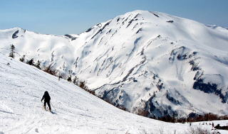 | A | 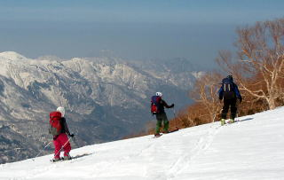 |
| 雪倉を目指して滑る場所も。 | ちょっとトラバリったり。 |
| 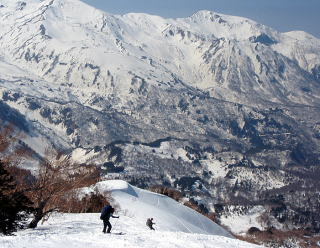 | A | 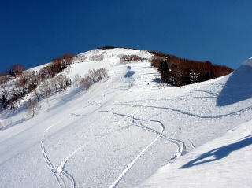 |
| 結構、急な下りがあったり。 | 振り返れば結構な斜面。 |
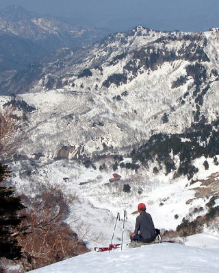 |
| 蓮華温泉が眼下だが、まだ高度差は600m。 |
| 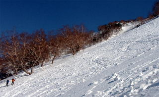 | A | 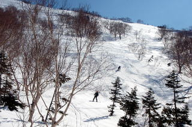 |
| 天狗の庭の下り。クラックとデブリに注意 | ここまでくれば一安心。 |
| 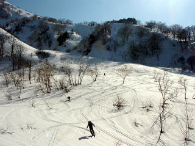 | A | 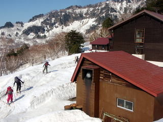 |
| 最後の一滑り。 | 15:10蓮華温泉到着。 |
| 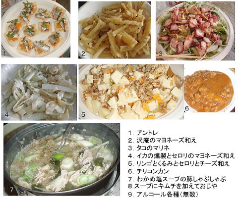 |
| 豪華！前菜とメインデイッシュ |
| ４月１２日 |
| 2日目もすばらしい晴天のもと、1200mを登り返して、 2630mから金山沢を1200ｍ滑った。 |
| 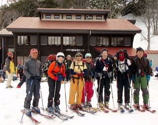 | A | 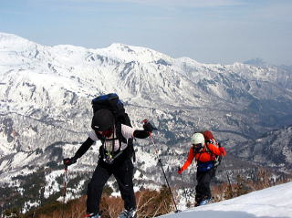 | 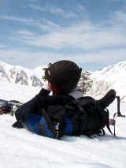 | |
| 6:45、蓮華温泉出発。 | やっぱり、結構な登り。 | あー、くたびれた。 |
| 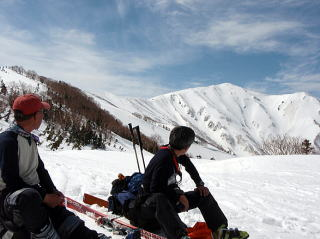 | A | 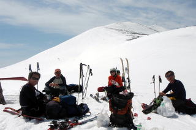 |
| あの稜線へ。 | 11：00、白馬大池にもどってきた。 |
| 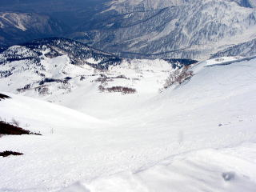 | A | 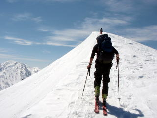 |
| 雷鳥坂から栂池方面を見る。 | 白馬が見えてくる。急斜面を登る人も見える。 |
| 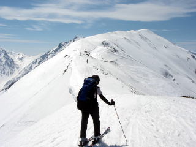 | 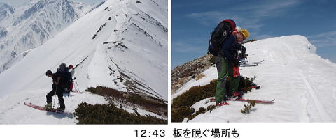 |
| 小蓮華山を目指して尾根を行く。 | 意外と時間を食う。 |
| 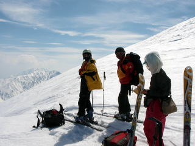 | A | 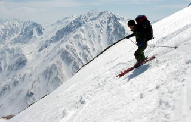 |
| 2630mのコルからドロップインする。 | 白馬を背景に滑る。この高度感！ |
| 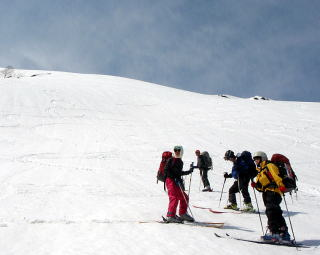 | A | 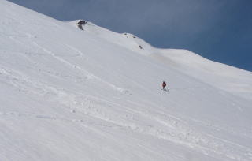 |
| 一段目で一休み。 | 緩斜面を選んで横に旅してくる人も。 |
| 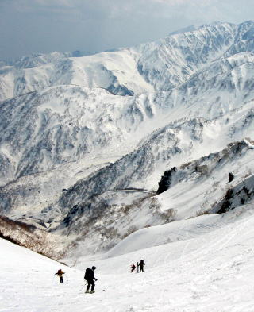 |
| 正面に八方尾根と日向山のコル。 |
| 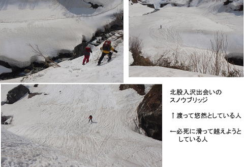A | 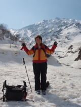 | |
| スノウブリッジを渡っておしまい。 | 白馬を背景にリーダー万歳。 |
| 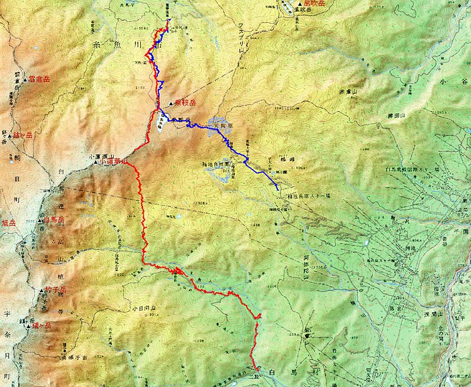 |
| 1日目のルートは青、2日目は赤 （野村健一さん作成） |